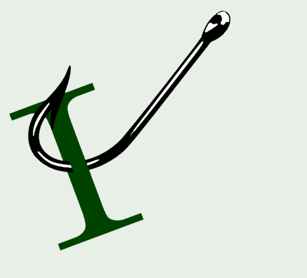

.NET
Build Agentic UI with the new Blazor AI components by .NET Team
Adding JsonPath support to custom object models in .NET by Gérald Barré
C# Singleton basics by Karen Payne
Critter Stack Round Up for the Past 2 Weeks by Jeremy D. Miller
Compiling a Résumé from a Career Record: cJobML in Practice (English) by Scott Galloway
Building a Speech-to-Text App in .NET With AssemblyAI by Milan Jovanović
AG-UI Protocol now has a first-class .NET SDK by .NET Team
Closing the Loop by Rockford Lhotka
Logical Message Deduplication with Wolverine by Jeremy D. Miller
Multi-Tenant Best Practices Can Backfire by Derek Comartin
Combined Serilog and EF Core Logging to the Same File in ASP .NET Core by Karen Payne
Filling Job Forms from a JobML Career Record with Chrome's Local LLM (English) by
Today I will... debug a production crash by Visual Studio Blog
Creating a memory dump in C# by .NET Team
Experimental support for Device Bound Session Credentials (DBSC) in ASP.NET Core by Andrew Lock
Azure
Using Azure Blob Storage as a durable filesystem for LangChain Deep Agents by Azure SDK Blog
Software Development
Highlights from Git 2.56 by The GitHub Blog
GitHub Copilot app for Beginners: How to build custom workflows with canvases by The GitHub Blog
Microsoft is updating its author-signing certificate starting September 23, 2026 by .NET Team
AI
The Standards That Make Your Business Agent-Ready by Kin Lane
When chat is the wrong UI by The GitHub Blog
AI-powered fuzzing with the GitHub Security Lab Taskflow Agent by The GitHub Blog
Rendering huge pull requests in the GitHub Copilot app by The GitHub Blog
Developers want more efficient software. Here’s what over 1,000 GitHub users told us they need. by The GitHub Blog
AI Wrote the Code. Now Who Owns the Architecture? by Barret Blake
comments powered by Disqus